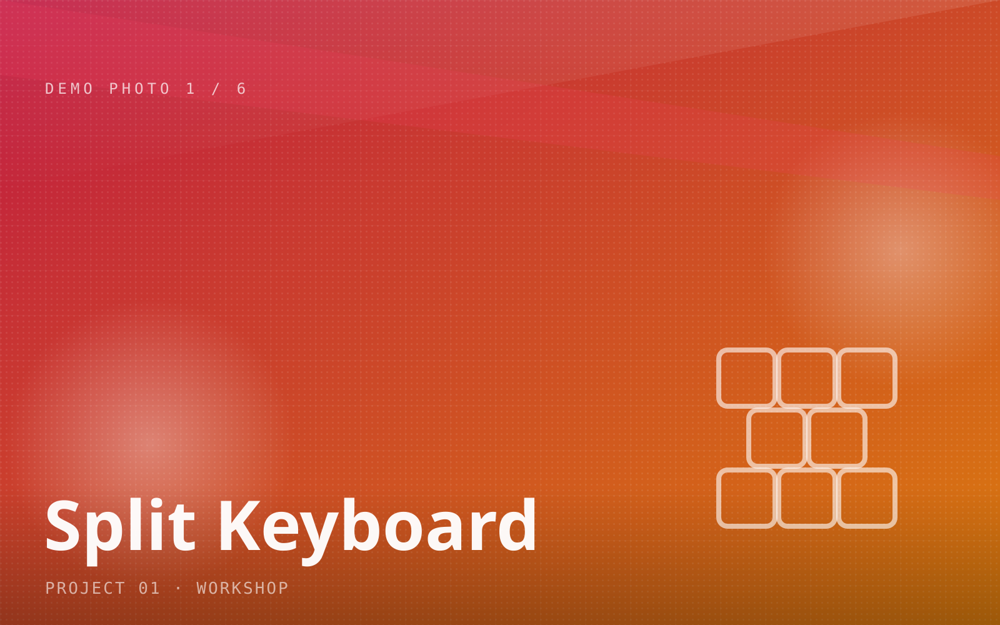
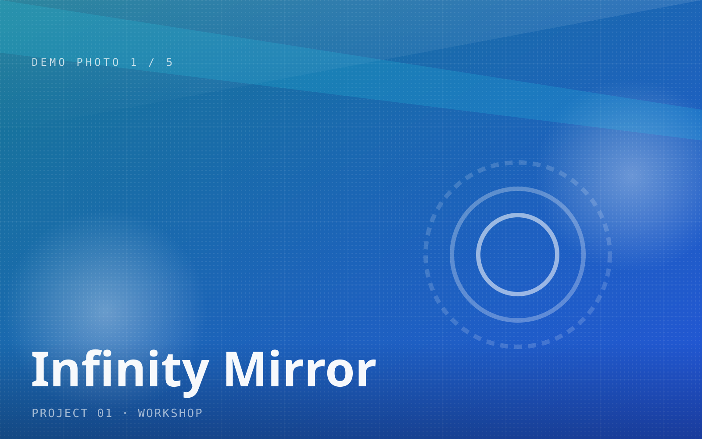
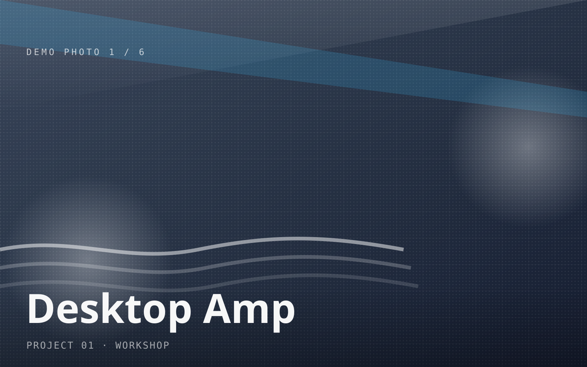

Workshop active
The Workshop
Where I like figuring out how things work, taking things apart, and building whatever comes to mind. A bit of electronics, CAD, 3D printing, computers , and whatever else I happen to get interested in. I don't really have a specific box I fit into — I just like making things.
Projects
01
 Open Build→
02
Open Build→
03
Open Build→
04
Open Build→
Open Build→
02
Open Build→
03
Open Build→
04
Open Build→
ATX Bench Power Supply
Turned a dead computer PSU into a lab-grade desk supply
Mar 2026
Split Mechanical Keyboard
Hand-wired columnar split with custom QMK firmware
May 2025
LED Infinity Mirror
Endless tunnel of light from a two-way mirror and a WS2812B ring
Nov 2025
Desktop Audio Amp
A small TPA3116 amp in a machined box, with a power filter
Jun 2024Parts
Parts & pieces I made — often built to go inside bigger projects.